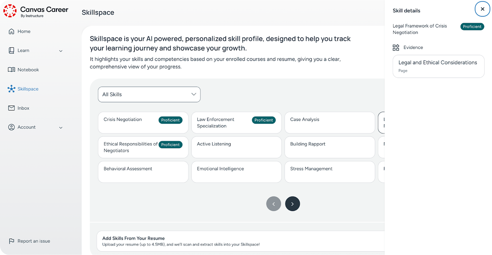

- Role
- End-to-end feature design lead
- Focus
- Explainable enterprise AI
- Period
- 2022–2025
- Delivery
- Concept through post-launch validation

Silent 47-second montage of Canvas Career, showing an AI-generated course preview, rule-based learner assignment, on-demand learner AI support, skill-based learning, smart course recommendations, and a data-and-insights dashboard for monitoring learning at scale.
Measurement note: Where quantitative outcomes are shown, they are rounded portfolio-reported project metrics and are not presented as independently audited company disclosures.
My Role & Mission
Led end-to-end feature development within the Canvas Catalog ecosystem, partnering with PMs and engineers from first concept through post-launch validation.

Challenges
Operating at platform scale allowed no “black-box” behavior. Every AI suggestion needed to be explainable, editable, and auditable. Instructors were overwhelmed by static analytics dashboards that showed “what happened,” not “what to do next.” Accessibility and privacy requirements (higher ed, healthcare, public sector) constrained interaction patterns. The work had to land as consistent AI UX across products, with resilient state design (empty/error/loading/latency) and a rollout plan that avoided disruption during high-traffic usage.
The Process
Use cases were anchored in Jobs to Be Done (e.g., draft an assignment, extract key takeaways, turn data into actions). Guardrails were set on day one: human-in-the-loop, clear AI labeling/disclosure, editable outputs, source cues, and recovery paths. Flows were co-reviewed with Legal/Compliance/Data Science, then codified into reusable patterns (prompts, review states, confirmations, feedback loops). Prototyping with Uizard/Galileo/Lovable shortened concept→test cycles. Adoption and completion were instrumented, and features shipped behind safe flags, iterating on evidence rather than hype.
Who We Designed For
- Instructors and admins who need actionable guidance, not raw charts
- Learners who benefit from clear, accessible feedback and materials
- Institutions with strict accessibility, privacy, and audit requirements
UX Methods & Why They Were Used
- Contextual inquiry & task shadowing – to see real classroom/admin workflows and find the moments where “AI help” is truly needed.
- JTBD & task mapping – kept scope focused on outcomes (draft → review → publish; insight → action), not features.
- Heuristic reviews & cognitive walkthroughs – early, low-cost checks for feedback, error prevention, and safe defaults in AI flows.
- Rapid prototyping (low → high fidelity) – compared prompt patterns, review states, and disclosure models before build.
- Moderated usability tests – validated that AI guidance was understandable, editable, and trusted (no “magic,” clear next steps).
- Accessibility reviews against WCAG 2.1 AA – focused on keyboard flow, semantic structure, and screen-reader clarity across the AI states in scope.
- Stakeholder co-reviews (Legal/Compliance/DS) – aligned privacy, licensing, data retention, and auditability from the outset.
- Instrumentation planning – guaranteed that adoption, completion, and user sentiment were measurable post-launch.
Design Principles (AI UX)
- Explain, then suggest. Show the “why” behind suggestions (signals, sources).
- Human in control. Outputs are editable and reversible with clear review states.
- State clarity over surprise. Empty, loading, error, and latency states are explicit.
- One AI pattern, many contexts. Reusable prompt/review/confirm patterns across SKUs.
- Privacy by default. Data handling is disclosed; opt-outs and retention rules are visible.
- Accessible by design. Interactions were designed and tested toward WCAG 2.1 AA across keyboard and screen-reader workflows.
What Was Shipped
- AI pattern library (prompting, sources, review/confirm, feedback loops)
- Guardrail framework (human in the loop, editability, audit, recovery)
- Accessible component states (empty/error/loading/latency) across SKUs
- Design tokens & content guidelines for AI disclosures/help
- Instrumentation hooks and survey triggers for ongoing evaluation
Behind the Decisions: Reflections & Trade-offs
Most teams start AI projects asking, “What can we automate?” This one started with a different question: “What must stay human?”
We could have gone all-in on automation and had spectacular demos. But education, public sector, and healthcare customers don’t buy demos; they buy trust. That’s why we drew a very hard line: no invisible decisions, no uneditable outputs, no “just trust the model.” Every AI suggestion had a label, an edit state, and a way to back out.
The messy part was not technical, it was ethical. We had to design for failure modes: What if the AI is wrong? Biased? Misused? Rather than pretending those cases wouldn’t happen, we mapped them explicitly and built flows around them. Data Science, Legal, and Compliance weren’t blockers at the end; they were co-authors of the guardrails from the start.
If you want AI that looks impressive in a slide deck, this isn’t that story. If you want AI that real institutions can roll out to millions of people and sleep at night, this is the kind of product thinking I brought.

